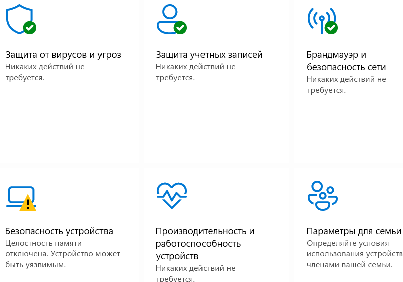
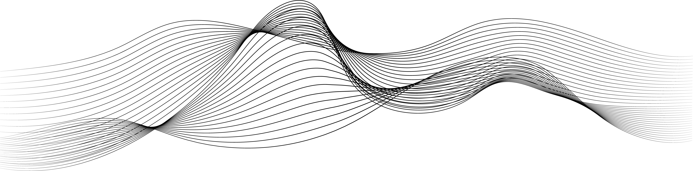
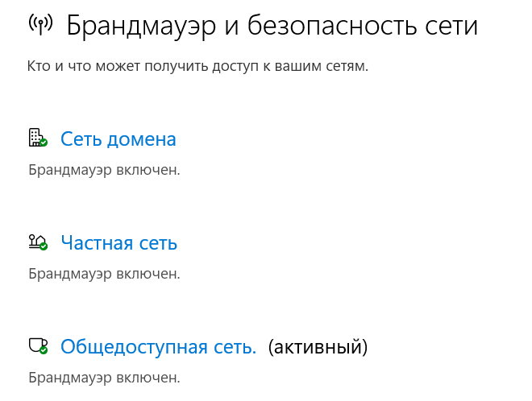
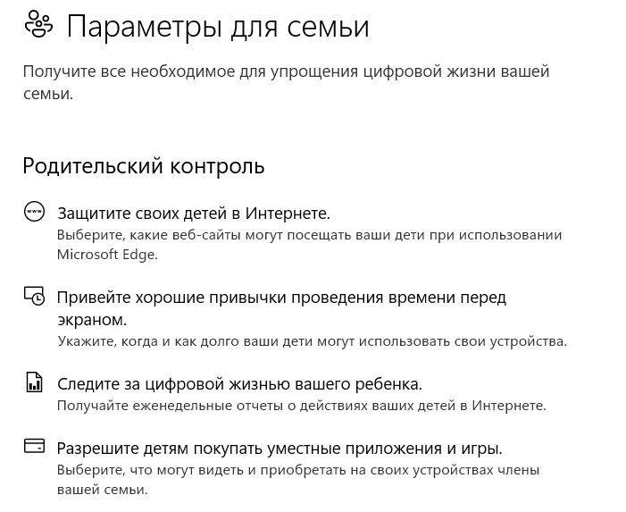
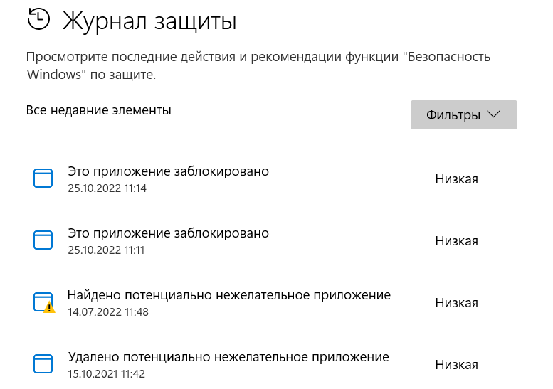
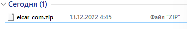

БЕЗОПАСНОСТЬ WINDOWS


Безопасность Windows — это место для управления инструментами, которые защищают ваше устройство и ваши данные:

- Защита от вирусов и угроз - Позволяет отслеживать угрозы устройства, запускать проверку
- Защита учетных записей
- Брандмауэр и защита сети - Позволяет управлять параметрами брандмауэра и отслеживать события, происходящие с вашими сетями и подключениями к Интернету.
- Управление приложениями и браузером
- Безопасность устройства - Помогает защитить устройство от атак вредоносного программного обеспечения.
- Просмотр производительности и работоспособности устройства
Данная программа не нуждается в установке, так как встроена в операционную систему Windows.

ПРОВЕРКА НА ВИРУСЫ
Встроенная служба защиты
Встроенная служба защиты
Для запуска сканирования на вредоносные файлы необходимо перейти на вкладку «Защита от вирусов и угроз». Для поверхностного поиска нужно нажать на кнопку «Быстрая проверка.» Также в этой вкладки доступны другие параметры проверки:
-Быстрая проверка. Проверяет папки в системе, где обычно находятся угрозы.
-Полное сканирование. Проверяются все файлы и запущенные программы на жестком диске. Такая проверка может занять больше часа.
-Настраиваемое сканирование. Выбор отдельных файлов или папок, которые следует проверить.
-Антивирусная программа в Microsoft Defender (автономная проверка). Некоторые вредоносные программы может быть особенно трудно удалить с устройства. Антивирусная программа в Microsoft Defender (автономное сканирование) может помочь найти и удалить их с помощью актуальных определений угроз. Устройство перезапустится, и сканирование займет около 15 минут.
ДРУГИЕ ФУНКЦИИ
Встроенная служба анализа
Встроенная служба анализа
Чтобы помочь защитить устройство, служба Безопасность Windows постоянно проверяет устройство на наличие проблем безопасности и формирует отчеты о работоспособности, представленные на странице "Производительность и работоспособность устройств". Отчеты о работоспособности предупреждают вас о распространенных проблемах в четырех основных областях и предлагают рекомендации по их устранению .
Помимо даты последнего сканирования в отчете о работоспособности отображается состояние основных отслеживаемых областей:
- Емкость хранилища
- Приложения и программное обеспечение
- Уровень заряда
Брандмауэр и защита сети в системе безопасности Windows позволяет просматривать состояние брандмауэра защитника Windows и просматривать сети, к которым подключено устройство. Брандмауэр помогает управлять тем, какой трафик может находиться в сети или на устройстве.



Для тестирования работы программы на ПК произойдёт преднамеренная попытка скачивания вируса
EICAR.
При попытке распаковки происходит автоматическое удаление содержимого.

При попытке распаковки происходит автоматическое удаление содержимого.